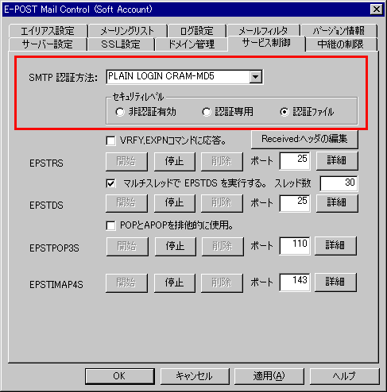
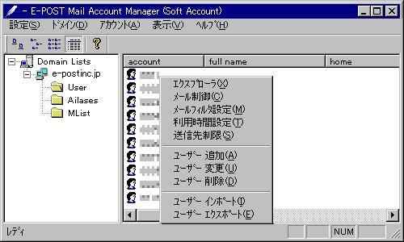
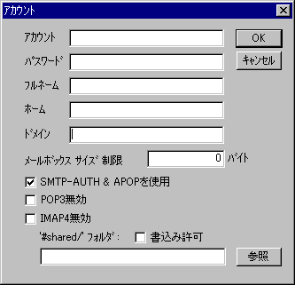

SMTP認証（SMTP-AUTH）設定の手順
SMTP認証（SMTP-AUTH）を可能にする場合は以下の手順にて設定を行って下さい。
１. E-Post Mail Controlの設定
最初に「E-Post Mail Control」にて、サービスがSMTP認証の実行を可能にする設定を行います。

E-Post Mail Control
→［サービス制御］タブ
→［SMTP認証方法］＝「PLAIN LOGIN CRAM-MD5」を選択（※1）
→［セキュリティレベル］＝「認証ファイル」を選択
「適用」ボタンをクリックし、その後 EPSTRSの［停止］ボタン→［開始］ボタンをクリックすることでサービス再起動 します。
（※1）［SMTP認証方法］はいちばん下の "PLAIN LOGIN CRAM-MD5" にしておけば、メールクライアント側からアクセスしてきたとき、接続時に自動的に調整され、いちばん強いいずれかの方法で認証しようとします。
２. E-Post Account Manager の設定
次に「E-Post Account Manager」にて、各ユーザーがSMTP認証での接続有無を設定します。


Account Manager
→［ドメインツリー］を選択
→ツリーから［User］をクリック
→右側で該当アカウントを選択し、ダブルクリック
→［アカウント設定ダイアログ］で「SMTP-AUTH ＆ APOPを使用」チェックボックスをオン。
「ＯＫ」ボタンをクリックしダイアログボックスを閉じると、パスワード入力が促されますので正しいパスワードを入力してください。
以上でサーバー側の設定は完了します。続いてメールクライアント側でもSMTP認証可能な設定を行えば、メールの送信がSMTP認証にて行えるようになります。